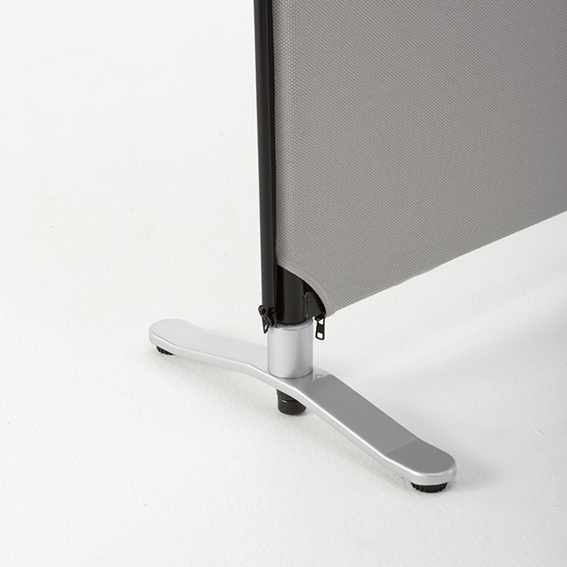

ホーム > 製品情報 > パーティション > ZIP LINKパーティション
ZIP LINKパーティション
Ziplink Partition
更に豊富なパーツを利用すれば、
オフィス、家庭、店舗などとにかく場所/目的を選ばず対応可能です。

YS-OP-01
安定脚
パーティションを安定させるために使用します。

YS-OP-02
キャスター付安定脚
移動に便利な、キャスター付の安定脚です。
YS-OP-11
中間キャスター
キャスター付安定脚(YSOP-02)を使用の際、連結部に必要です。
YS-OP-06
ストレート金具
パーティションを直線に連結させる際、取り付けて安定させます。
YS-OP-07
直角金具
パーティションを直角に連結させる際、取り付けて安定させます。

YS-OP-03
マグネットボード
パーティションに取り付けて、マグネットを使用します。

YS-OP-12
キャスターセット
安定脚(YSOP-01)を、キャスター付安定脚(YSOP-02)にアップグレードできます。